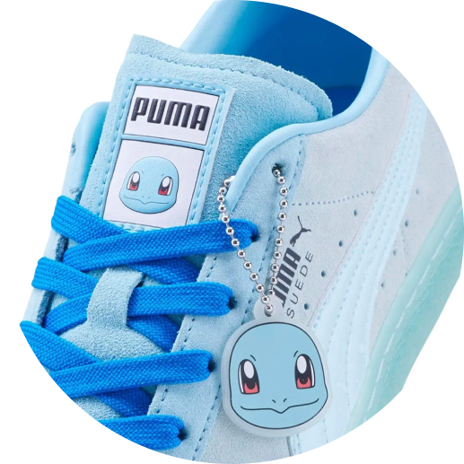
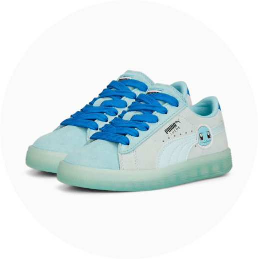

A coleção PUMA X POKÉMON se inspira em alguns dos Pokémon mais icônicos, e aproveitamos algumas de suas características mais marcantes para infundir um pouco do DNA Pokémon no tênis Suede Squirtle. Cores chamativas, gráficos marcantes, e detalhes inspirados no adorável Squirtle - você encontra tudo aqui. Será que você vai conseguir caçar todos eles?


Detalhes:
- Cabedal em suede
- Sobreposições em couro envernizado
- Faixa PUMA Formstrip com efeito de gotas d‘água
- Acessório em TPU no cadarço
- Etiqueta Pokémon na língua